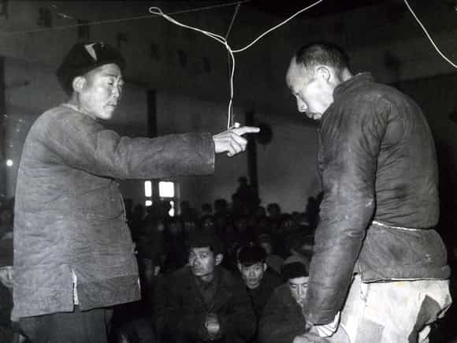

Leftists believe countless silly things: gun control makes everyone safer, Hillary is suitable to be President, men can get pregnant, etc. Postmodernist professors believe objective reality doesn’t exist. Despite that, leftists are all very certain that the truth is on their side and everyone else is dumber than dirt.
Suppose you’re in a debate where you’re wrong. Your opponent merely can show that either your facts or your reasoning are incorrect. Then you lose, and you go home looking awfully silly. Pretty simple, right?
Now the following are heavy-handed tactics that nobody needs to use if the truth really is on their side. Lest anyone try to misrepresent this, I don’t recommend using bad arguments or dirty tricks, but be aware of how to spot them.
Priming the audience
Anyone advocating highway construction will also have a bellicose foreign policy and a lousy human rights record, QED.
Being “the firstest with the mostest” is a great advantage in any war of information. This can be taken to dishonest extremes. The first recourse against targeted dissidents or competing ideologies is an information blackout.
If they’re getting too big to ignore, the next step is to turn the public against them preemptively before their message reaches a wide audience. Clever propagandists will go further and portray targeted views not just as wrong, but as completely reprehensible. The very idea of objective discussion—or even considering the merits of the targeted opposition—must be made to seem crazy, idiotic, sinful, evil, etc.
The target might be a specific organization, collection of groups conveniently lumped together, or ideologies and policy positions. By crafty association, adherents are portrayed as ill-tempered, brutish, criminal, etc. Video presentations with spooky music and old stock footage of historical meanies can help drive home the point. Meanwhile, adversaries of targeted views will be portrayed sensitively and cloaked in virtue—sometimes almost worshipfully—even if they’re none too saintly. (In fact, the irony sometimes rises to black comedy.) Thereby, politics is reduced to melodrama befitting a spaghetti Western.
Afterward, more familiar propaganda techniques are sufficient to keep the public turned against the targeted opposition. If they’re allowed any media access, usually it will be by their least charismatic and articulate members. However, any gaffes or particularly controversial points will suffice too. Today’s propagandists are great at cherry-picking sound bites (sometimes out of context) and carefully selecting shots and camera angles.
All this is how the Blue Pill public’s minds get made up by people they don’t know. If the truth is on their side, why is it necessary to condition the masses to have unquestioning, knee-jerk reactions?
Logical fallacies
This straw man clearly encourages children to smoke grass!
The art of rhetoric concerns proper debate as well as detecting verbal trickery, such as:
-
Begging the question: Using an unstated assumption as a premise
-
Irrelevant conclusion: Talking about something else to dodge the substance of the argument
-
False dichotomy: Incorrectly portraying something an either/or proposition
-
Appeal to popularity: If “everyone” believes something, it must be true
-
Straw man: Overstating an opponent’s position
-
Appeal to emotion: Effective as the “pathos” element of rhetoric, but illegitimate when it derails logical discussion
Those twisted arguments (among many others) are so old that they have names in Greek and Latin. In modern times, common new variants on old themes include:
- Cherry picking evidence supporting one’s argument
- Whoever cares the most about a subject must be “right”
- Sidetracking a discussion onto endless tangents
- Picking apart disputed evidence that’s fairly inconsequential, while ignoring everything else
- Insisting you provide cited scientific studies, while expecting you to believe their unsupported assertions
- Dismissing peer-reviewed scientific studies with non-PC conclusions as “offensive” or “insensitive”
-
Gross exaggerations or outright lying
Fallacious tactics are sometimes sloppiness, though bad arguers usually know what they’re doing. People secure in their facts and reasoning don’t need to use misdirection tactics, “my researcher can beat up your researcher”, or other word games.
Censorship

This tactic goes back to antiquity. Likely the first time was a king telling his subjects to quit criticizing his mistakes, or else. Although censorship can go quite far to silence opposition, there are drawbacks. It’s remarkably heavy-handed. Also, welding the safety valve of public opinion shut leads to simmering resentment. Further, it deprives a regime of valuable honest feedback.
Today, this takes several forms. Once again, the information blackout is the first line of defense. When the mass media is an oligopoly of a few corporate conglomerates with like-thinking executives and staffers, it’s easy to exclude competing narratives. Vigorous public debate can exist, so long as it’s within certain unspoken limits subject to change.
Since the 1990s, online communication has given the public a means to present their own information and commentary. To put a lid on it, service providers (ISPs, web hosts, payment processors, etc.) include terms of service allowing them to shut down dissenters arbitrarily. The criteria are very broad but very vague, giving massive discretionary power to block opposing narratives. Social Justice Warriors monitor for dissenting narratives across many platforms, and some companies even hire teams of them. The newest trend is computer-driven analysis to police speech robotically.
With several policy positions, one side may be argued freely, but the other side is delegitimized. For instance, it’s permitted to advocate vociferously for open borders. However, explaining why that’s bad can get you censored for “promoting hate” (whatever that’s supposed to mean).
The final phase of censorship is by law. This is already well in place in most parts of Europe. Questioning policies, or even certain historical matters, can result in fines or jail time. Thus, you can advocate multiculturalism until you’re blue in the face, but advocating against it will land you in court. Once again, the criteria are very broad and selectively enforced.
If leftists believe certain ideas are so clearly incorrect, then why is it necessary to keep them out of the public sphere or make them illegal?
Intimidation

Chinese Communist struggle session
By instilling fear of questioning narratives, people can be induced to censor themselves. Conformity is a powerful force, as the Milgram experiment (among others) demonstrated. One example is all the “if you’re voting for Trump, then remove me from your friends list” messages from last year, posted by people who pride themselves on tolerance and inclusion.
Worse is online mobbing and doxing. Expressing certain opinions might get you blacklisted from your job or have your personal details revealed. You and your family can be deprived of income or put in danger. Leftists are still incensed about efforts to get Communists out of Hollywood and the State Department six decades ago during the height of the Cold War. However, they’re curiously silent about ordinary private citizens getting purged in recent times over non-treasonable dissent.
The final step is violence. In recent years, a number of leftist groups have been raising hell, rioting, and suppressing dissenters. Some are well-funded to the point where “protesters” can be paid and bused in from afar. (Although the members are cannon fodder for globalist billionaires, they think they’re fighting the Establishment.) Police response is sometimes ineffective, even though they’ve been targeted personally. Often police are overwhelmed, or even on orders to stand down.
Why are witch hunts and goon squads necessary in a free marketplace of ideas?
Why ideologies take on a life of their own
Entire regimes can be enmeshed in ideologies that are flawed to the point of absurdity. Suppose that the Soviet leadership had openly admitted that Communism doesn’t work, and they stopped punishing dissidents for saying that. Would they (and all the apparatchiks working under them) have stayed in power?
For a more recent example, quite likely thousands of people work in foundations or otherwise make their careers out of trying to get more women into STEM fields. How long would they keep riding the gravy train if they admitted that most women simply don’t like nerdy careers? (Recently, James Damore got fired from Google for saying something similar.) To bring big donations to foundations and justify feminist HR specialties, it takes the scare story about “The Patriarchy” keeping women out of technology. To maintain the narrative, other explanations must be suppressed.
That one is a relatively innocuous example. Several other flawed notions have astronomically greater impact on the public, but I’ll leave that as an exercise for the reader. If the leftist power structure loses grip over their narratives and can’t exclude other views, their corrupt regime will fall.
Read More: Twitter Appoints Anti-Free Speech Feminist Anita Sarkeesian To Head Trust And Safety Council